Указанные 13:03:50 соответствуют PTS3832с. На кадрах3832–3834с видны столкновение мотоцикла с белой машиной и последующая остановка автобуса. Автобус остаётся препятствием перед N на просмотренных кадрах как минимум с13:03:58 до13:10:58.
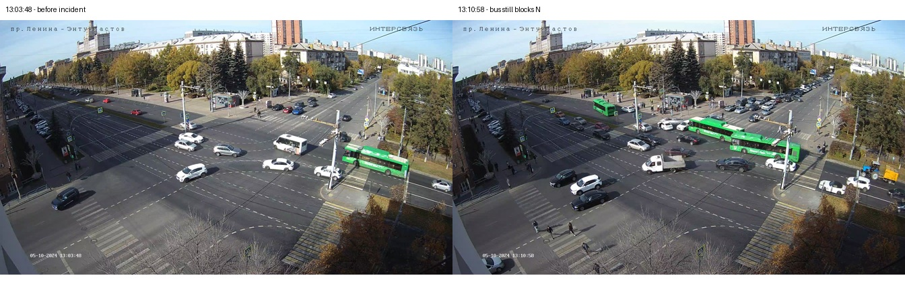
Это пока видеоэталон. Связь videoPTS ↔ millis JSON не принята, поэтому новая точность алгоритма не вычислялась. Видимый E/W продолжает переключаться; цвет N напрямую не виден и из противоположного направления не выдумывается. Видео не поступает в рабочий алгоритм.
Столкновение по секундам · До/после ДТП · Перекрытие автобусом
Все6 JSON прочитаны. Найдены213 записей bus; записей категории мотоцикла нет. Среди долгих остановок есть кандидат car8341 (434,591с), но его тождество машине в ДТП ещё не подтверждено. Исходные данные сохранены.
Метки получены из видео до чтения прогнозов алгоритма. Это один визуальный обзор; ширина некоторых brackets превышает1с из-за тёмных/перекрытых линз. Жёлтый и красно-жёлтый пока не сертифицированы. Таблица не утверждает посекундную точность алгоритма.
| Цвет | PTS,с | Ширина,с | До | После |
|---|---|---|---|---|
| RED | 3770.500–3771.000 | 0.500 | 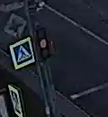 | 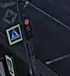 |
| GREEN | 3806.667–3807.167 | 0.500 | 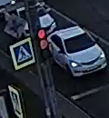 | 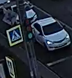 |
| RED | 3870.800–3871.300 | 0.500 | 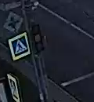 | 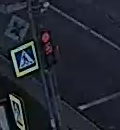 |
| GREEN | 3906.867–3907.867 | 1.000 | 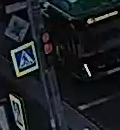 | 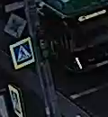 |
| RED | 3970.467–3971.000 | 0.533 | 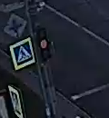 | 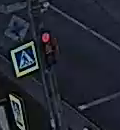 |
| GREEN | 4006.633–4008.667 | 2.033 | 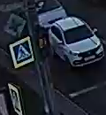 | 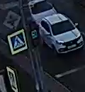 |
| RED | 4070.767–4071.267 | 0.500 | 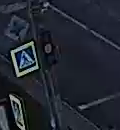 | 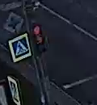 |
| GREEN | 4107.333–4108.333 | 1.000 | 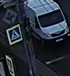 | 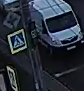 |
| RED | 4170.567–4172.567 | 2.000 | 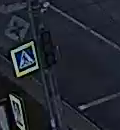 | 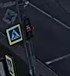 |
| GREEN | 4206.633–4207.133 | 0.500 | 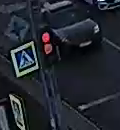 | 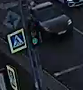 |
| RED | 4270.733–4271.233 | 0.500 | 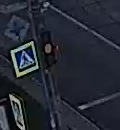 | 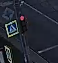 |
| GREEN | 4307.300–4308.300 | 1.000 | 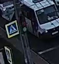 | 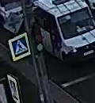 |